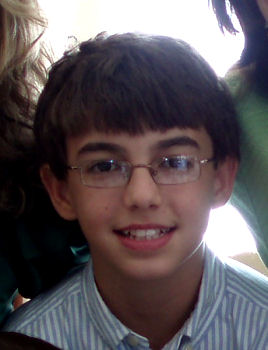

Pablo González Alirangues
Pablo González Alirangues 

This page is within a frameset. View the entire genealogy report of González Alirangues families, or surname index of González Alirangues pedigrees or report summary of González Alirangues heritage from "Árbol Genealógico de Manolo y Amalia".
Introduction About Genealogy.
© 2006 GenoPro Inc. All Rights Reserved.